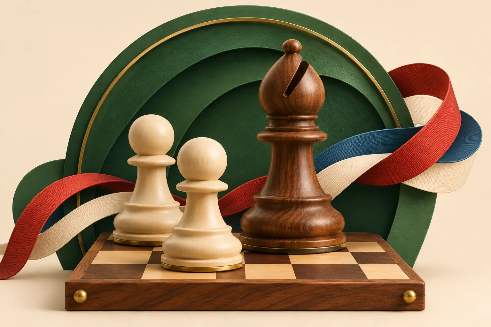
La défense slave commence par 1. d4 d5 2. c4 c6. Les Noirs soutiennent leur pion d5 avec le pion c6 plutôt qu’avec …e6 immédiatement. Le fou c8 garde sa diagonale de sortie, mais son développement doit rester compatible avec la défense du centre et de b7.
- Avec les Noirs
- 1. d4 d5 2. c4 c6
- Repère ECO : D10
Vous venez de voir les Blancs proposer le pion c dans un gambit dame. La Slave choisit d’abord de renforcer d5. Cette décision permet de comparer deux soutiens de pion : …c6 et …e6 ne donnent pas les mêmes cases aux pièces.
Elle peut vous convenir si vous cherchez une réponse structurée à 1. d4 suivi de c4. Le début ressemble visuellement à la Caro-Kann, mais les pions blancs et les menaces ne sont pas les mêmes.
À retenir avant de jouer
- Votre objectif
- Soutenir d5 par c6 tout en conservant des possibilités de développement pour le fou c8.
- La décision au centre
- Après cxd5 cxd5, utiliser la colonne c ouverte ; après …dxc4, organiser le jeu autour du pion avancé.
- Le point de vigilance
- Une avance …b4 peut attaquer le cavalier c3 : le développement ne doit pas ignorer cette menace.
Dans ce guideChoisissez votre point de départ
Sur l’échiquier
Les premiers coups, un à un
Dans la notation française, C = cavalier, F = fou, D = dame et O-O = petit roque. T = tour et R = roi. Le signe x indique une capture, + un échec et # un mat. Les points de suspension indiquent un coup des Noirs.
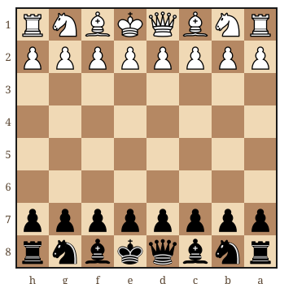
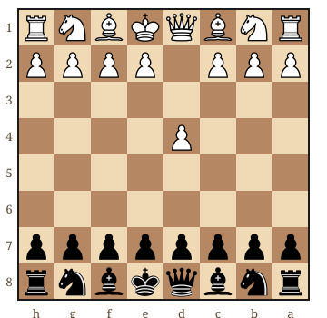
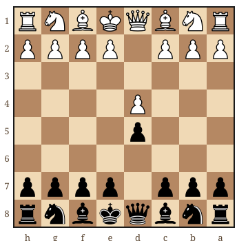
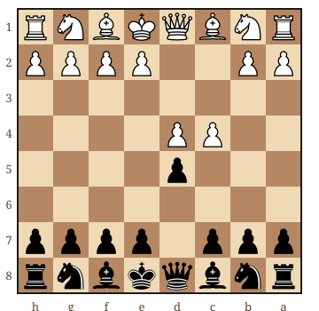
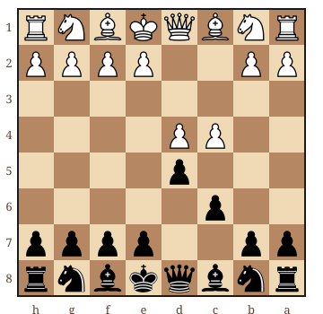
Ce que chaque coup accomplit
- 1. d4
Les Blancs occupent d4 et ouvrent leur fou c1.
- 1…d5
Les Noirs répondent par un pion central en d5.
- 2. c4
Le pion c4 attaque d5 et propose l’offre du gambit dame.
- 2…c6
Le pion c6 soutient d5. Le pion e7 ne ferme pas encore la diagonale du fou c8.
Votre fil conducteur
Trois idées à garder en tête
Comprendre le pion de soutien
Si les Blancs capturent d5 par cxd5, le pion c6 peut reprendre. Observez quelle colonne s’ouvre et quel pion occupe ensuite le centre.
Garder un projet pour le fou c8
Sa diagonale est disponible avant …e6, mais le sortir immédiatement n’est pas toujours approprié. Vérifiez notamment le centre et le pion b7.
Développer sans copier la Caro-Kann
Le cavalier b8 ne peut pas aller tout de suite en c6, occupé par votre pion. Les autres pièces doivent trouver un développement cohérent avec les pions blancs d4 et c4.
Un exemple court pour comprendre le plan
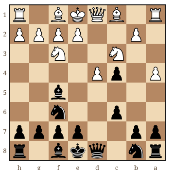
Cette illustration donne une place au fou c8 après un échange en c4. Les Blancs ont joué a4, les Noirs développent alors …Ff5. La prise en c4 est un choix, pas une obligation ; ne copiez pas cet ordre si l’adversaire a changé la position.
Deux choix des Blancs à reconnaître
3. cxd5 : La variante d’échange
Le pion c blanc prend d5. Les Noirs peuvent reprendre avec …cxd5 : le pion c6 joue son rôle de soutien.
3. Cf3 : Développer et garder la tension
Les Blancs sortent une pièce sans régler immédiatement le contact des pions c4 et d5. Les Noirs peuvent eux aussi développer leur cavalier.
Ce sont des repères pour vous orienter. Vous n’avez pas besoin de mémoriser leurs ramifications pour commencer à jouer.
Comprendre ce qui se joue
Lire le centre et la structure de pions
Le pion c6 soutient d5 tandis que le pion e reste en e7. La différence avec un soutien immédiat par …e6 concerne notamment le fou c8 : sa diagonale d7–e6–f5 n’est pas encore fermée par le pion e. Cela crée une possibilité de sortie, pas une obligation de jouer …Ff5 à la première occasion.
Le pion b7 est initialement défendu par ce fou depuis c8. Quand le fou part, une dame blanche en b3 peut le viser par la colonne b si le passage est libre. Pour compter d’autres attaques de cette dame, regardez aussi les obstacles : tant que le pion blanc reste en c4, il interrompt la diagonale b3–c4–d5. Après un échange cxd5, cette diagonale peut s’ouvrir. Les deux situations ne doivent pas être confondues.
Après cxd5 et …cxd5, c6 se libère et l’ancien pion c noir remplace le pion d au centre. La structure est différente de celle où les Noirs ont pris en c4. Le rôle du fou, les cases du cavalier b8 et les colonnes disponibles doivent être réévalués. La réputation « solide » de la Slave n’empêche pas une faiblesse ponctuelle sur b7 ou une menace centrale.
Quelles cases chercher pour vos pièces ?
Ces placements sont des repères à vérifier dans la position, pas des coups à jouer sans regarder l’adversaire.
- Pion c7c6 pour soutenir d5
- S’il reprend plus tard en d5, la case c6 devient disponible et le centre change de détenteur.
- Cavalier g8f6
- Il participe notamment au contrôle de d5 et e4. Comptez son rôle avant de l’envoyer vers une autre aile.
- Fou c8f5 ou une autre case selon la position
- Sa sortie doit tenir compte de b7, des échanges centraux et de la dame blanche. Une diagonale libre ne suffit pas à prouver qu’un coup est bon.
- Cavalier b8une case compatible avec le pion c6
- Cc6 n’est pas disponible tant que c6 est occupée. Un échange de pions peut modifier cette contrainte.
- Dame et roirépondre aux pressions avant le placement idéal
- Une défense de b7 peut demander un coup précis. Évitez de poursuivre votre développement en laissant une menace matérielle sans réponse.
Comment réagir aux idées adverses
Si les Blancs jouent Db3
Inspectez la colonne b jusqu’à b7 et la diagonale vers d5. La présence ou l’absence du pion c4 change les attaques réelles. Le fou c8 a-t-il déjà quitté sa case ? Le cavalier f6 défend-il d5 ? Cette lecture pièce par pièce vaut mieux qu’une règle qui condamnerait toujours la sortie du fou.
Si les Blancs échangent en d5
Après …cxd5, ne continuez pas à compter un pion en c6. Cette case est libre et les deux camps ont transformé leur structure. Certaines diagonales de dame deviennent plus actives ; réexaminez aussi la défense du pion qui vient d’arriver en d5.
Si vous prenez vous-même en c4
Vous quittez temporairement le centre d5 pour prendre le pion proposé. Les Blancs peuvent chercher à reprendre en développant un fou, ou empêcher un soutien …b5 par a4. Ne consacrez pas tous vos coups à garder ce pion si vos pièces et votre roi restent en retard.
Une décision concrète
Le fou sorti et les deux cibles de la dame blanche
Les Noirs ont développé le fou en f5. Après l’échange cxd5 et …cxd5, la dame blanche arrive en b3. Elle vise b7 et, cette fois, la diagonale vers d5 est libre puisque le pion c4 a disparu.
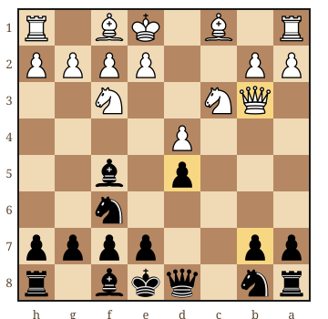
Quel coup de dame peut défendre b7 et proposer un échange des dames ?
Repérez d’abord les menaces et les cases contrôlées, puis proposez une réponse.
Lire l’analyse de la position
6…Db6 est une possibilité. La dame b6 défend b7 et se place face à la dame b3. Le pion d5 reste soutenu par le cavalier f6. Avant de choisir une défense, il fallait distinguer les deux cibles et leurs défenseurs. Si les dames s’échangent, les conséquences de la reprise sur la structure de pions devront aussi être examinées.
Comparer pour comprendre
Reprendre avec le pion ou la dame : l’effet sur le développement
Après l’échange blanc cxd5, les Noirs disposent de plusieurs reprises légales dans la position étudiée. La présence du pion c6 sert précisément à pouvoir reprendre avec …cxd5. Une reprise de dame est également possible ici, mais elle expose la dame à un coup de développement blanc.
Comparer ces deux branches ne sert pas à interdire toutes les reprises de dame. Il s’agit de voir la différence entre conserver la dame en retrait et la placer sur une case où le cavalier blanc peut l’attaquer. Le matériel reste équilibré dans les deux illustrations.
Position commune de départ :
1. d4 d5 2. c4 c6 3. cxd5
Rejouez cette position, puis comparez les suites ci-dessous. Ce sont des exemples commentés : elles ne constituent pas deux recommandations équivalentes ni des coups à reproduire sans calculer.
…cxd5 : le pion de soutien remplace le pion capturé
3… cxd5
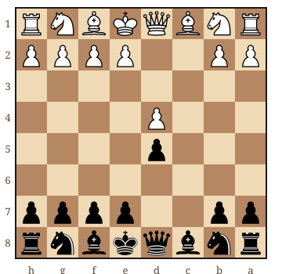
3…cxd5 reprend le pion blanc avec celui de c6. La dame reste en d8 et la case c6 se libère. Le pion arrivé en d5 provient de la colonne c ; le pion d noir a disparu dans l’échange. Vous pouvez maintenant choisir vos développements en tenant compte de cette nouvelle structure.
Les Blancs n’ont plus de pion sur la colonne c, et les Noirs n’ont plus de pion sur leur colonne c non plus après la reprise en d5. Cette colonne est ouverte si aucun autre pion n’y arrive ensuite. Avant d’y imaginer une tour, il faut tout de même développer les pièces qui en bloquent l’accès.
…Dxd5 puis Cc3 : la dame devient une cible de développement
3… Dxd5 4. Cc3 Da5
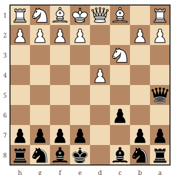
Après 3…Dxd5 4. Cc3, le cavalier blanc sort en attaquant la dame d5. Dans la suite illustrative …Da5, la dame recule encore. Les Noirs ont conservé leur pion c6 et doivent donc toujours en tenir compte pour le développement du cavalier b8.
Le matériel n’a pas changé par rapport à l’autre reprise, mais le rythme n’est pas le même. Les Blancs ont développé une pièce avec une menace, et la dame noire a consommé un coup supplémentaire. Ne concluez pas pour autant à une victoire forcée : identifiez les pièces qui doivent maintenant sortir et les points centraux à défendre.
Vérifiez votre compréhension
Quel était l’un des rôles du pion c6 ?
Soutenir d5 et pouvoir reprendre après cxd5. La reprise …cxd5 illustre directement ce rôle.
Après …Dxd5 et Cc3, pourquoi faut-il considérer une retraite de dame ?
Le cavalier c3 attaque d5. Dans l’illustration, …Da5 traite cette attaque ; il ne s’agit pas d’un échec automatique contre le roi e1.
Pourquoi la case c6 n’a-t-elle pas le même statut dans les deux branches ?
Après …cxd5, elle est libre. Après …Dxd5, le pion noir est encore en c6 et peut gêner le développement habituel du cavalier b8.
À appliquer dans vos parties : Quand vous reprenez un pion, ne regardez pas seulement le matériel rétabli. Comparez aussi les cases libérées et la possibilité pour l’adversaire de développer une pièce avec une menace. Vous saurez mieux pourquoi une reprise de pion est souvent plus simple à organiser ici.
Reconnaître les embranchements
Deux variantes à comprendre pour commencer
Ces lignes courtes montrent ce qui change dans le centre et le développement. Rejouez les coups, puis formulez le plan avec vos propres mots ; les réponses adverses peuvent vous amener à une autre position.
La Slave d’échange : ouvrir la colonne c
1. d4 d5 2. c4 c6 3. cxd5 cxd5 4. Cc3 Cf6 5. Cf3
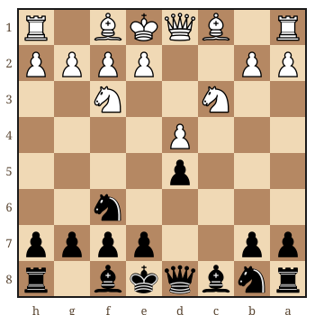
Les pions c des deux camps quittent la colonne c : le blanc a capturé en d5, puis le noir l’a repris. Les pièces lourdes pourront plus tard utiliser cette colonne, une fois leur développement organisé.
Le plan à comprendre : La structure paraît symétrique, mais le premier joueur conserve un temps d’avance. Les Noirs doivent développer leur fou c8 et choisir des cases actives pour leurs cavaliers. Une colonne ouverte ne gagne rien si les tours restent enfermées sur leur case initiale.
La capture en c4 : le centre devient une décision
1. d4 d5 2. c4 c6 3. Cf3 Cf6 4. Cc3 dxc4 5. a4 Ff5
Les Noirs prennent c4. Avec a4, les Blancs contrôlent b5 et compliquent la défense de ce pion par …b5 ; le fou noir sort ensuite en f5. Les Blancs devront encore organiser la reprise du pion c4.
Le plan à comprendre : L’idée à retenir est le lien entre le centre et l’aile dame : défendre un pion avancé demande souvent d’autres poussées de pions. Les Blancs peuvent préparer e3 et Fxc4, tandis que les Noirs doivent terminer leur développement sans s’accrocher au pion à n’importe quel prix.
Calculer avant de jouer
Piège et vigilance : Pousser sur un cavalier puis ignorer l’attaque
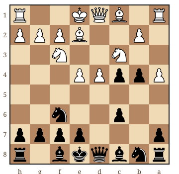
1. d4 d5 2. c4 c6 3. Cf3 Cf6 4. Cc3 dxc4 5. e4 b5 6. a4 b4 7. Fe2
Avant de lire la suite, repérez les échecs, les captures et les pièces attaquées.
Voir la suite et le mécanisme
7… bxc3
Le pion noir arrivé en b4 attaque le cavalier c3. Si les Blancs développent leur fou en e2 sans déplacer le cavalier, …bxc3 le capture. Les coups a4 et …b4 ont transformé l’aile dame en zone tactique : continuer le développement normal perd une pièce.
Comment éviter le problème ou y répondre
Après …b4, 7. Ca2 met le cavalier à l’abri de cette capture immédiate. Ce recul n’est pas proposé comme un objectif idéal d’ouverture ; il montre le coût d’un cavalier chassé par des pions. Anticipez sa case de retrait avant de provoquer une avance à l’aile dame.
Suite de référence à rejouer depuis le début :
1. d4 d5 2. c4 c6 3. Cf3 Cf6 4. Cc3 dxc4 5. e4 b5 6. a4 b4 7. Ca2
Passer de l’ouverture au milieu de partie
Lorsque le centre est fixé, les deux camps cherchent souvent à améliorer leurs pièces et à préparer une rupture centrale. Demandez-vous quelles pièces contrôlent e4 et e5, et quel échange de pions peut ouvrir une colonne utile. La première poussée disponible n’est pas forcément celle qui aide le mieux vos pièces.
Pour retravailler une partie de Slave, repérez le moment du départ du fou c8 et celui du premier échange central. Redessinez ensuite les attaques de dame sur b7 et d5. Vous apprendrez à reconnaître quand une faiblesse est réelle, plutôt qu’à craindre toutes les sorties de dame adverses.
Le nom et ses origines
D’où vient le nom « défense slave » ?
Le nom « slave » renvoie aux maîtres d’origine slave qui ont contribué à sa théorie, parmi lesquels Alapin, Alekhine et Bogoljubov. Il ne désigne ni un inventeur unique ni une seule partie fondatrice.
La défense a notamment été mise en lumière par la pratique des matchs de championnat du monde entre Alekhine et Euwe dans les années 1930. Son histoire combine des analyses et des utilisations successives.
Le nom ne permet pas de déduire une année de création certaine. Pour une première leçon, la définition utile reste la structure après d4, …d5, c4 et …c6.
Les erreurs à éviter dans cette ouverture
Jouer …Ff5 sans regarder b7 et le centre
La diagonale du fou est libre, mais cela ne rend pas tous ses départs bons. Certaines positions demandent d’abord de résoudre une menace centrale ou de dame.
Confondre Slave et Caro-Kann
Les deux peuvent montrer des pions noirs en c6 et d5. La Slave répond ici à d4 et c4 ; la Caro-Kann commence contre e4.
Oublier la reprise après cxd5
Le rôle de …c6 est aussi de préparer …cxd5. Avant une capture, imaginez la structure après la reprise, pas seulement le pion momentanément perdu.
À vous de jouer
Un exercice pour vérifier l’idée
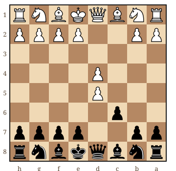
Quel pion peut reprendre en d5 pour rétablir une présence noire au centre ?
Prenez quelques secondes pour choisir et expliquer votre coup.
Voir la réponse expliquée
3…cxd5 : le pion c6 capture le pion blanc en d5. Le pion de soutien remplace ainsi le pion d noir qui a été pris. Les deux pions c ont changé la structure : il faut ensuite développer les pièces.
Votre prochaine séance de pratique
- Après …c6, identifiez le pion soutenu et la diagonale encore disponible au fou c8.
- Rejouez cxd5 et …cxd5 puis nommez le pion noir resté au centre.
- Comparez les positions de départ de la Slave et de la Caro-Kann sans déplacer les pions blancs.
Besoin de comprendre vos propres parties ? Les cours d’échecs permettent de travailler à partir de vos positions.
Quelles ouvertures comparer ensuite ?
- Gambit dame : comprendre 1. d4 d5 2. c4 simplement
Revoir les objectifs blancs auxquels répond la Slave.
- Défense Caro-Kann : comprendre c6 et d5 pour débuter
Comparer le rôle de …c6 dans deux réponses à des premiers coups différents.
Retrouver les onze ouvertures et choisir votre prochaine fiche.
Questions fréquentes
Quels coups définissent la défense slave ?
La suite 1. d4 d5 2. c4 c6 caractérise la Slave. Le pion c6 soutient d5 en réponse au gambit dame.
Quelle différence entre Slave et Caro-Kann ?
La Slave répond à une structure blanche avec d4 et c4. La Caro-Kann commence par 1. e4 c6. Des pions noirs semblables ne signifient pas que les plans et les menaces sont identiques.
Le fou c8 doit-il sortir immédiatement ?
Non. Sa diagonale est disponible avant …e6, mais il faut vérifier les menaces centrales, b7 et les possibilités adverses avant de choisir sa case.